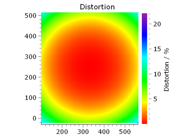

itom Documentation
4.2.2
Table of Contents
1. Changelog
2. Introduction
3. Installation
4. Getting Started
5. The itom User Interface
6. Plots and Figures
7. Extending the user interface of
itom
8. Plugins
9. Python Scripting Language
10. itom Script Reference
11. Miscellaneous
12. Demo scripts
12.1. itom
12.1.1. Basics
12.1.2. Data processing
12.1.3. Matplotlib embedded
12.1.4. itom apps
12.1.5. Plots
12.1.6. Plugins
12.1.7. PointCloud
12.1.8. User interface
12.1.9. Customize itom GUI
12.1.10. User interface dynamic layouts
12.1.10.1. Basics
12.1.10.2. Data processing
12.1.10.3. Matplotlib embedded
12.1.10.4. itom apps
12.1.10.5. Plots
12.1.10.6. Plugins
12.1.10.7. PointCloud
12.1.10.8. User interface
12.1.10.9. Customize itom GUI
12.1.10.10. User interface dynamic layouts
12.2. Python
12.3. Python packages
13. Contributing
itom Documentation
»
12.
Demo scripts
»
12.1.
itom
»
12.1.10.4.
itom apps
View page source
12.1.10.4.
itom apps
¶

cameraToolbox
cameraToolbox